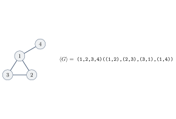
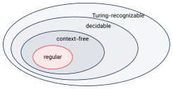

تز چرچ–تورینگ و زبانهای تصمیمپذیر
۱۸.۱الگوریتم چیست؟#
به زبان ساده، الگوریتم مجموعهای از دستورهای ساده برای انجام یک کار است (به آن روال یا دستور کار هم میگویند). الگوریتمها قدمت زیادی دارند؛ مثلاً الگوریتم پیدا کردن اعداد اول یا الگوریتم بزرگترین مقسومعلیه مشترک (اقلیدس). اما با وجود این تاریخ طولانی، خود مفهوم الگوریتم تا قرن بیستم بهطور دقیق تعریف نشده بود. چرا به تعریف دقیق نیاز داریم؟ داستان زیر جواب را نشان میدهد.
۱۸.۱.۱مسئله دهم هیلبرت#
یک چندجملهای مجموع چند جمله است و هر جمله حاصلضرب چند متغیر در یک عدد ثابت (ضریب) است. مثلاً جملهای با ضریب ۶ است و
یک چندجملهای روی متغیرهای ، و . یک ریشه مقداردهیای به متغیرهاست که چندجملهای را صفر کند (مثلاً ، ، برای چندجملهای بالا). ریشهای که همه مقدارهایش عدد صحیح باشند ریشه صحیح است.
بعضی چندجملهایها ریشه صحیح دارند و بعضی ندارند. دیوید هیلبرت در کنگره بینالمللی ریاضیدانان در پاریس (سال ۱۹۰۰) ۲۳ مسئله را به عنوان چالش قرن بیستم مطرح کرد. مسئله دهم این بود:
مسئله دهم هیلبرت. روندی پیدا کنید که با تعداد متناهی عمل (یعنی یک الگوریتم) مشخص کند آیا یک چندجملهای ریشه صحیح دارد یا نه.
هیلبرت ظاهراً فرض میکرد چنین الگوریتمی وجود دارد و فقط باید پیدایش کرد. امروز میدانیم هیچ الگوریتمی برای این کار وجود ندارد. اما اثبات «وجود نداشتن الگوریتم» با یک تصور شهودی از الگوریتم ممکن نیست؛ برای آن به تعریف دقیق نیاز داریم.
۱۸.۱.۲تز چرچ–تورینگ#
در سال ۱۹۳۶ دو تعریف دقیق برای الگوریتم ارائه شد: آلونزو چرچ با حساب لامبدا و آلن تورینگ با ماشین تورینگ. این دو تعریف همارز از آب درآمدند. رابطه میان مفهوم شهودی و تعریف دقیق را تز چرچ–تورینگ (Church–Turing Thesis) مینامیم:
تز چرچ–تورینگ. مفهوم شهودی الگوریتم = الگوریتمهای ماشین تورینگ
این یک «تز» است، نه قضیه؛ هرگز اثبات نشده (و چون یک طرفش مفهومی شهودی است، اثبات ریاضی هم ندارد). اما شواهد زیادی به نفع آن هست: هر مدل محاسباتی واقعبینانهای که تا امروز پیشنهاد شده، با ماشین تورینگ همارز بوده است. اگر دستگاهی بتواند به سؤالهایی فراتر از توان ماشین تورینگ جواب دهد، به آن پیشگو (oracle) میگوییم.
۱۸.۱.۳مسئله هیلبرت به زبان این درس#
مسئله دهم هیلبرت یعنی: آیا مجموعه زیر تصمیمپذیر است؟
جواب منفی است: تصمیمپذیر نیست، اما تورینگ-تشخیصپذیر است.
مثال ۱۸.۲ (حالت یکمتغیره). تشخیصپذیر است:
- را به ترتیب برای محاسبه کن. اگر در هر نقطه مقدار صفر شد، بپذیر.
اگر ریشه صحیح داشته باشد، بالاخره آن را پیدا میکند و میپذیرد. اگر نداشته باشد، تا ابد ادامه میدهد. پس تشخیصدهنده است، نه تصمیمگیرنده.
برای حالت چندمتغیره هم ماشینی مشابه میسازیم که همه مقداردهیهای ممکن متغیرها را (به ترتیبی که همه را پوشش دهد) امتحان کند؛ پس هم تشخیصپذیر است.
آیا را میتوان به تصمیمگیرنده تبدیل کرد؟ بله. ریشههای یک چندجملهای تکمتغیره همیشه بین
قرار دارند که تعداد جملهها، ضریب با بیشترین قدرمطلق و ضریب جمله با بیشترین درجه است. (برای بزرگتر از این مقدار، جمله اول از مجموع بقیه بزرگتر است و چندجملهای نمیتواند صفر شود.) پس کافی است فقط مقدارهای این بازه را امتحان کنیم و اگر ریشهای پیدا نشد، رد کنیم. پس تصمیمپذیر است. اما برای حالت چندمتغیره، قضیه ماتیاسویچ نشان میدهد چنین کرانی نمیتوان پیدا کرد و تصمیمپذیر نیست.
۱۸.۲سطوح توصیف ماشین تورینگ#
ماشین تورینگ را در سه سطح میتوان توصیف کرد:
- توصیف صوری: همه هفت جزء ماشین (حالتها، تابع گذار و …) کامل نوشته میشوند.
- توصیف پیادهسازی: با کلمات توضیح میدهیم هد چطور حرکت میکند و دادهها چطور روی نوار ذخیره میشوند، بدون جزئیات حالتها.
- توصیف سطح بالا: فقط الگوریتم را توضیح میدهیم و جزئیات پیادهسازی را نادیده میگیریم.
از این به بعد بیشتر از توصیف سطح بالا استفاده میکنیم.
ورودی همیشه یک رشته است. اگر بخواهیم شیئی غیر از رشته (مثل چندجملهای، گراف، گرامر، ماشین یا ترکیبی از اینها) به ماشین بدهیم، آن را به شکل یک رشته کدگذاری میکنیم. کدگذاری شیء را با و کدگذاری چند شیء را با نشان میدهیم. ماشین تورینگ کدگذاری را رمزگشایی میکند و اگر ورودی کدگذاری معتبری نبود، رد میکند (این بررسی را معمولاً بهطور ضمنی فرض میکنیم).
مثال ۱۸.۳ (گرافهای همبند). . یک گراف و کدگذاری آن (فهرست رأسها و سپس فهرست یالها):

- اولین رأس را انتخاب و علامتگذاری کن.
- مرحله زیر را تا وقتی رأس جدیدی علامت نخورد تکرار کن:
- هر رأس را که با یک یال به یک رأس علامتخورده وصل است، علامت بزن.
- همه رأسها را بررسی کن. اگر همه علامت خورده بودند بپذیر؛ وگرنه رد کن.
۱۸.۳زبانهای تصمیمپذیر درباره زبانهای منظم#
در این بخش و بخش بعد مسئلههایی را میبینیم که الگوریتم دارند. این مثالها کمک میکنند در فصلهای بعد مسئلههای بدون الگوریتم را بهتر درک کنیم. بعضی از آنها کاربرد عملی هم دارند؛ مثلاً اینکه آیا یک گرامر مستقل از متن رشتهای را تولید میکند، به کامپایل برنامهها مربوط است.
برای بیان مسئلههای محاسباتی از زبان استفاده میکنیم: مسئله «آیا DFA رشته را میپذیرد؟» معادل این است که بپرسیم آیا عضو زبان زیر است:
تصمیمپذیر بودن این زبان یعنی مسئله محاسباتی تصمیمپذیر است.
تصمیمپذیر است.
اثبات.
- را روی شبیهسازی کن.
- اگر شبیهسازی در یک حالت پذیرش تمام شد، بپذیر؛ وگرنه رد کن.
جزئیات پیادهسازی: پنج جزء DFA را فهرست میکند. حالت فعلی و مکان فعلی در را روی نوار نگه میدارد. از شروع میکند، هر بار یک نماد را میخواند و با نگاه کردن به تابع گذار حالت را عوض میکند. وقتی تمام شد، بررسی میکند حالت فعلی پذیرش است یا نه. شبیهسازی دقیقاً گام دارد، پس همیشه متوقف میشود.
تصمیمپذیر است.
اثبات. ایده جدید: از یک الگوریتم قبلی به عنوان زیرروال استفاده میکنیم.
- را با روش ساخت زیرمجموعهای (قضیه ۴.۹) به DFA همارز تبدیل کن.
- ماشین قضیه قبل را روی اجرا کن.
- اگر پذیرفت بپذیر؛ وگرنه رد کن.
ساخت زیرمجموعهای یک الگوریتم با تعداد گام متناهی است و تصمیمگیرنده است، پس هم همیشه متوقف میشود.
تصمیمپذیر است.
اثبات.
- عبارت منظم را با روش لم ۶.۵ به NFA همارز تبدیل کن.
- را روی اجرا کن و همان جواب را بده.
تصمیمپذیر است.
اثبات. زبان DFA تهی نیست اگر و تنها اگر از حالت شروع به یک حالت پذیرش مسیری باشد.
- حالت شروع را علامت بزن.
- تا وقتی حالت جدیدی علامت نخورد تکرار کن:
- هر حالتی را که از یک حالت علامتخورده پیکانی به آن وارد میشود، علامت بزن.
- اگر هیچ حالت پذیرشی علامت نخورده، بپذیر؛ وگرنه رد کن.
حلقه حداکثر بار تکرار میشود، پس همیشه متوقف میشود.
تصمیمپذیر است.
اثبات. DFA را طوری میسازیم که تفاضل متقارن و را بپذیرد؛ یعنی رشتههایی که دقیقاً در یکی از دو زبان هستند:
اگر و تنها اگر . DFA را میتوان با ساختهای بستاری تحت متمم، اشتراک و اجتماع (فصل ۳) ساخت.
- DFA را مانند بالا بساز.
- ماشین قضیه قبل را روی اجرا کن.
- اگر پذیرفت بپذیر؛ وگرنه رد کن.
۱۸.۴زبانهای تصمیمپذیر درباره زبانهای مستقل از متن#
تصمیمپذیر است.
ایده ۱ (کار نمیکند): همه اشتقاقها را یکییکی امتحان کنیم. اگر رشته را تولید کند بالاخره پیدا میشود، اما اگر تولید نکند ماشین تا ابد ادامه میدهد. این یک تشخیصدهنده است، نه تصمیمگیرنده.
ایده ۲: اگر در فرم نرمال چامسکی باشد، هر اشتقاق رشتهای به طول دقیقاً گام دارد. دلیل: هر گام با قاعده تعداد متغیرها را یکی زیاد میکند و هر گام با قاعده یک متغیر را به پایانه تبدیل میکند. از یک متغیر شروع میکنیم و به پایانه میرسیم، پس دقیقاً گام از نوع اول و گام از نوع دوم داریم. پس کافی است فقط اشتقاقهایی با گام را بررسی کنیم، که تعدادشان متناهی است.
اثبات.
- را به یک گرامر همارز در فرم نرمال چامسکی تبدیل کن.
- همه اشتقاقهای گامی را فهرست کن که . (اگر ، همه اشتقاقهای یکگامی را فهرست کن.)
- اگر یکی از این اشتقاقها را تولید کرد، بپذیر؛ وگرنه رد کن.
تبدیل به CNF الگوریتم دارد و تعداد اشتقاقهای با طول ثابت متناهی است، پس همیشه متوقف میشود. (الگوریتم CYK فصل ۱۱ همین کار را بسیار سریعتر انجام میدهد.)
تصمیمپذیر است.
ایده ۱ (کار نمیکند): همه ها را یکییکی با قضیه قبل امتحان کنیم. تعداد ها نامتناهی است و اگر زبان تهی باشد، ماشین هرگز متوقف نمیشود.
اثبات. به جای آن، برای هر متغیر بررسی میکنیم که آیا میتواند رشتهای از پایانهها تولید کند.
- همه پایانههای را علامت بزن.
- تا وقتی متغیر جدیدی علامت نخورد تکرار کن:
- هر متغیر را علامت بزن اگر قاعدهای مثل داشته باشد که همه قبلاً علامت خورده باشند.
- اگر متغیر شروع علامت نخورده، بپذیر؛ وگرنه رد کن.
یک متغیر علامت میخورد اگر و تنها اگر رشتهای از پایانهها تولید کند (با استقرا روی تعداد دورها و طول اشتقاق). حلقه حداکثر بار تکرار میشود.
تصمیمپذیر نیست.
روشی که برای به کار رفت اینجا جواب نمیدهد، چون زبانهای مستقل از متن تحت متمم و اشتراک بسته نیستند. اثبات تصمیمناپذیری را در فصل ۲۰ میبینیم.
هر زبان مستقل از متن تصمیمپذیر است.
ایده ۱ (کار نمیکند): PDA زبان را با یک ماشین تورینگ شبیهسازی کنیم. ماشین تورینگ میتواند پشته را روی نوارش شبیهسازی کند، اما بعضی شاخههای PDA ممکن است تا ابد روی پشته بنویسند و بخوانند بدون اینکه متوقف شوند. پس ماشین تورینگ حاصل تصمیمگیرنده نخواهد بود.
اثبات. فرض کنید مستقل از متن و یک گرامر برای آن باشد. یک نسخه از را درون ماشین قرار میدهیم:
- ماشین قضیه ۱۸.۹ را روی اجرا کن.
- اگر پذیرفت بپذیر؛ وگرنه رد کن.
رابطه دستههای زبانهایی که تا اینجا دیدیم:

- تز چرچ–تورینگ: مفهوم شهودی الگوریتم همان ماشین تورینگ است.
- مسئله دهم هیلبرت (ریشه صحیح چندجملهای) تشخیصپذیر است اما تصمیمپذیر نیست.
- ورودی ماشین همیشه رشته است؛ اشیاء را با کدگذاری میکنیم.
- تصمیمپذیر: ، ، ، ، ، ، و هر زبان مستقل از متن. تصمیمناپذیر: .